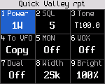

FM
FM 在每款电台上都可用。电台参考说明哪些电台的 FM 已验证，也列出无法发送或检测亚音的电台。
FM 信道上的快速设置
在主屏幕按 *。磁贴按键盘布局排列，数字键直接作用于对应磁贴。

| 按键 | 磁贴 | 作用 |
|---|---|---|
| 1 | 功率 | 在电台的最低档、默认档和最高档之间步进（功率级别） |
| 2 | 静噪 | 打开静噪编辑器 |
| 3 | 亚音 | 打开亚音编辑器 |
| 4 | 模式 | 显示 FM。按下可临时在同一频率上以 DMR 收听和通话 |
| 5 | 监听 | 锁定打开静噪，或再次关闭。在 VFO 中此磁贴为发射频率（分离） |
| 6 | VOX | 开或关声控发射 |
| 7 | 双守候 | 开或关双守候 |
| 8 | 宽度 | 带宽 12.5 或 25 kHz（VFO 中也可用） |
| 9 | 亮度 | 打开亮度编辑器 |
| 0 | 打开设置 |
上 和 下 在磁贴间移动。OK 作用于焦点项。按 * 或 返回 关闭。所有更改都是临时的。长按 OK 可保存到信道。
有功率级别键的电台，该键在主屏幕上也会逐级切换功率，按一次一级，走遍电台所有级别。
静噪
- *、2。静噪编辑器打开。
- 按 上 或 下，或 0 到 9 数字键。更改即时生效，可以听到效果。
- 按 OK、* 或 返回 关闭。
静噪级别在主屏幕上显示为“SQ”加数字。电台级默认值在设置 > 通话与收听 > 默认静噪（未更改时为 5）。

监听
- 按住监听可在按住期间打开静噪。状态行显示 RX 和 MON，LED 为绿色。
- *、5 会锁定监听，直到再次用 *、5 关闭。
亚音（CTCSS 与 DCS）
- *、3。亚音编辑器在发射亚音上打开。电台显示“上下 亚音 # 收/发”。
- 按 上 或 下 在 CTCSS 亚音和 DCS 码间步进。更改即时生效。
- 按 # 选择编辑哪个亚音：收发都改、仅发射、仅接收。收发相同时，编辑器从“都改”开始。
- 按 OK 或 * 关闭。
使用 DCS 码时，松开 PTT 后电台会继续发射 0.3 秒，发送 DCS 关闭音。设为同一码的电台会据此关闭静噪，因此不会在末尾听到噪声爆音。
主屏幕把亚音显示为标签，例如“T100.0”。
| 标签 | 含义 |
|---|---|
| T | 发射亚音与接收亚音不同 |
| R | 只有接收亚音，没有发射亚音 |
| 无标签 | 无亚音 |
带宽
*、8 在 12.5 和 25 kHz 间切换。主屏幕显示“12.5k”或“25k”。
到 VFO
*、4 把信道复制到 VFO 并打开（“已复制到 VFO”）。信道没有临时模式更改。要试听某个频率作为 DMR，请复制到 VFO，再在那里切换 VFO 的模式（VFO）。
VOX
*、6 为 FM 信道打开 VOX（“VOX 开：说话即发射”）。你说话时电台发射，停止后 1.5 秒停止。接收音频绝不会触发它，PTT 照常工作。灵敏度尚无菜单项。哪些电台有 VOX 见功能矩阵。
忙信道锁定、roger beep、单音突发
电台核心有忙信道锁定、roger beep 和用于中继接入的 1750 Hz 单音突发。它们尚无菜单项或按键。开发者可通过调试链路设置。
发射超时
超过发射超时后电台停止发射，并显示“已达发射超时”。电台频率中信道自己的超时优先。为 0 时，适用设置 > 通话与收听 > 发射超时（未更改时为 3 分钟）。超时前 10 秒会发出警告音。
双音多频（DTMF）
在 FM 信道上按住 PTT 并按 0 到 9、* 或 #：电台在你按住期间发送该键的双音多频，快速点按至少发送 0.1 秒。播放音调时麦克风静音。连续快速按键会各自发送音调，中间有短暂间隔。发射屏幕第二行显示“DTMF”和最后发送的数字。
- 有额外键盘键的电台可发送 A 到 D（电台参考）。
- 按键锁定时不发送任何内容。
- 在 DMR 信道上发射时按键无作用。
- 1750 Hz 突发或 roger beep 期间按键无作用。
- 电台自行发射时（APRS 信标），或拒绝发射（“NO TX”）时，按键照常工作。
存储的 DTMF 码和双音多频解码尚未构建。